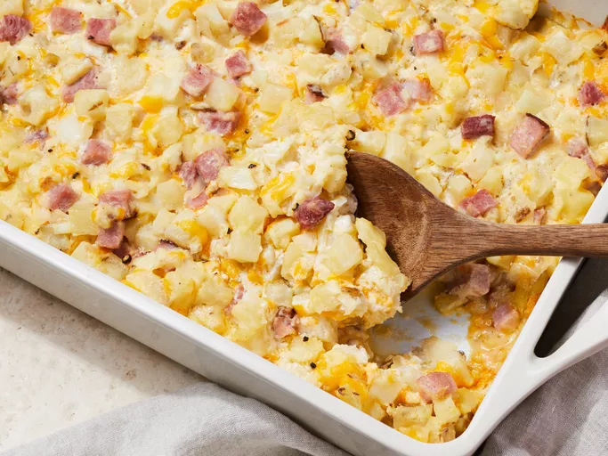

Cheesy Ham Potato Bake

Description
An easy ham, cheese, and potato casserole. I have been told by several people that this could possibly be the best thing they ever tasted. Cheese, ham, and hash browns make this a dish even your pickiest eater will like. A delicious recipe your kids will beg you to make!
Ingredients
- 1 (30 ounce) package frozen hash brown potatoes, thawed
- 1 (12 ounce) package pre-cooked ham steak, diced
- 2 cups shredded sharp Cheddar cheese, or more to taste
- 1 onion, chopped
- 1 (10.5 ounce) can condensed cream of chicken soup
- 1 (8 ounce) container sour cream
- ½ cup butter, melted
- salt and ground black pepper to taste
Steps
- Gather all Ingredients
- Preheat the oven to 350 degrees F (175 degrees C). Grease a 9x13-inch baking dish.
- Stir hash browns, ham, cheese, onion, condensed soup, sour cream, and butter in a large bowl; season with salt and pepper.
- Transfer mixture to the prepared baking dish and cover with aluminum foil.
- Bake until bubbly and cheese is melted, 45 minutes to 1 hour. Remove foil and continue baking until brown, about 15 minutes more.